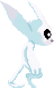
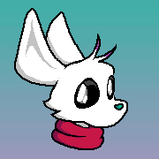
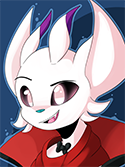
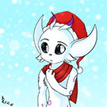
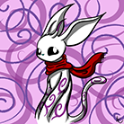
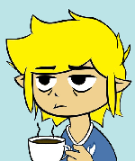
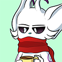
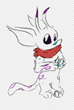

Kei

CLICK ON THUMBNAILS FOR FULL SIZED IMAGES
You might be asking me why I am obsessed with this creature:
Pixel Art by Airi-pyon.
Well the answer is because Ori is fucking cute.
So of course, I, being the sad fuck I am, thought making an Ori OC was a good idea.
So let me introduce you to this fucker:
Drawn by MrPorkchop
Their name is Kei (pronounced like the letter "K"). They are genderless.
No, I really don't feel like giving my OC any sort of backstory, as I find the idea of writing any kind of backstory for an OC dumb, but that's just me. They just sort of exist.
Anyway here is some more art of them:
Kei dressed up as a vampire for Halloween. Drawn by KirbyPie.
Kei Claus. Also Drawn by KirbyPie.
Drawn by H_Gamer858
 A redraw of that infamous Toon Link coffee image. Redrawn by KirbyPie.
This is the first drawing of them by Griffindorkulus. He helped me with the design of them.